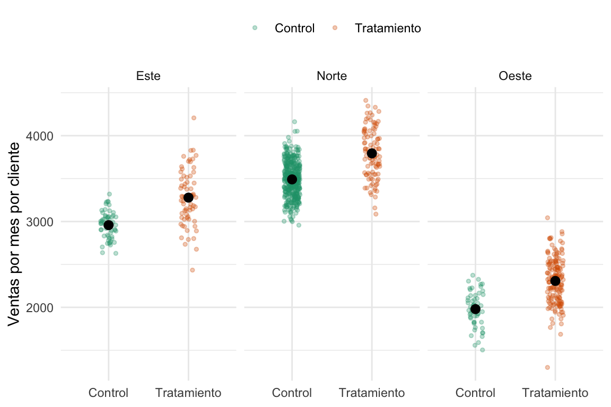
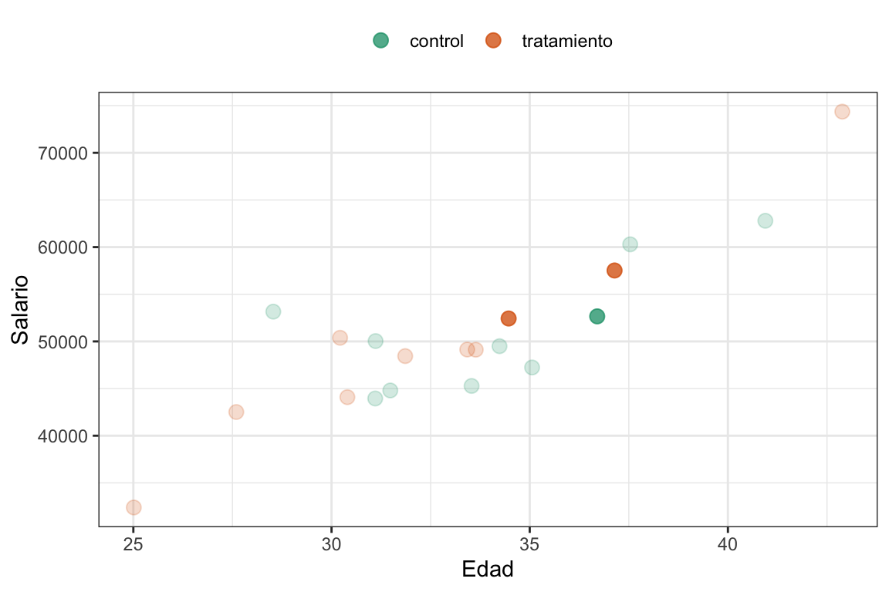
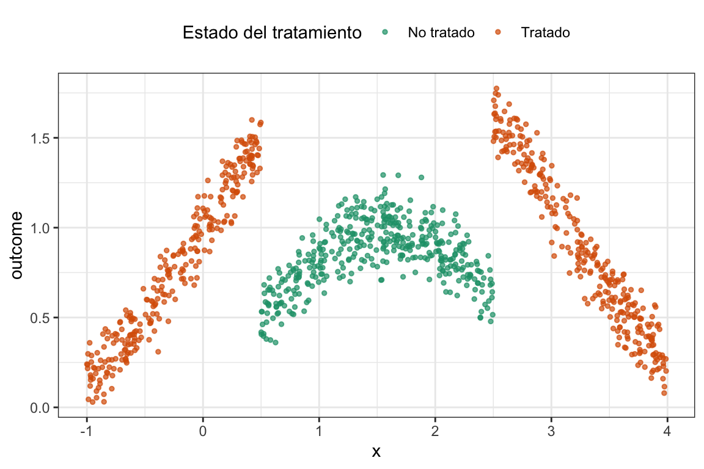

6 Subclasificación y matching
6.1 Subclasificación
6.1.1 ¿Por qué subclasificar? Motivación y objetivo
En estudios observacionales la asignación al “tratamiento” muchas veces ocurre de forma completamente no aleatoria. Por ejemplo, supongamos que queremos medir el efecto de ofrecer un descuento en la cantidad de ventas de tiendas, pero el descuento se aplicó principalmente en aquellas regiones donde las ventas siempre fueron más bajas.
Si sólo comparamos el promedio de ventas de tiendas con descuento frente a las que no lo recibieron, el resultado estará sesgado, porque la asignación del “tratamiento” (el descuento) no fue aleatoria. Es decir, el efecto reflejará tanto el descuento como las características de la región.
El objetivo de la subclasificación es, entonces, estimar el efecto causal del descuento como si la asignación hubiera sido aleatoria dentro de cada región. Para ello, se divide el conjunto de tiendas en estratos según la región, se calcula la diferencia de ventas entre tiendas con y sin descuento en cada estrato, y luego se combinan esos efectos de forma ponderada. De este modo, se logra balancear la comparación y acercarse a un estimador no sesgado del efecto promedio del descuento.
6.1.2 Independencia vs. independencia condicional
Hablamos de independencia, cuando tenemos un experimento con asignación completamente aleatoria:
\[ D \perp (Y_0,Y_1) \]
Es decir, la decisión de asignar a tratamiento o no (D) es independiente de los potential outcomes, y por lo tanto la diferencia de medias entre tratados y controles ofrece una estimación válida del ATE.
Sin embargo, en muchos cuasiexperimentos la “aleatorización” sólo ocurre condicional a alguna característica observable X. Esto nos lleva a la asunción de independencia condicional (CIA1), que podemos escribir como:
1 Del inglés Conditional Independence Assumption.
\[ D \perp (Y_0,Y_1) | X \]
O sea, una vez que fijamos X, la asignación al tratamiento se comporta como si fuera aleatoria.
En estudios observacionales como el de las tiendas y descuentos, la región (X) influye tanto en la probabilidad de recibir descuento (\(D\)) como en las ventas (\(Y\)), lo que genera un camino en el que \(X\) es confusor (\(D \leftarrow X \rightarrow Y\)). Si ignoramos esa ruta, la comparación global de medias mezclará el efecto real del descuento con las diferencias regionales, produciendo un sesgo.
Para entender por qué la subclasificación corrige esto, podemos representar el problema en un DAG:
Al condicionar en \(X\) (es decir, subclasificar o estratificar por región), cerramos el backdoor \(D \leftarrow X \rightarrow Y\). Dentro de cada región, la asignación del descuento ya no está correlacionada con las ventas antes del tratamiento.
6.1.3 El estimador de subclasificación: Un ejemplo con descuento
¿Cómo aplicamos esta idea de la subclasificación a un ejemplo real? Bueno, empecemos con un ejemplo “real”.
Supongamos que tenemos una distribuidora de gaseosas en el Gran Buenos Aires. Queremos medir el efecto de ofrecer un descuento a los clientes en las ventas. Este es un descuenta que se le da sólo a algunos clientes, pero sabemos que la asignación del descuento es aleatoria, pero sólo dentro de cada región. Esto pasó porque el jefe, muy astutamente dijo “¿Y si les ofrecemos más descuentos a la región que menos compra?”. Los clientes que menos compran son los del oeste(compra promedio $\(2000\)), y por eso tienen una \(p=0.8\) de recibir el descuento. Los del norte (compra promedio $\(3500\)) tienen una \(p=0.2\) y los del este (compra promedio $\(3000\)) una \(p=0.5\). También es relevante para el problema que algunas zonas tienen más clientes que otras, por ejemplo, el oeste tiene \(220\) clientes, el norte \(500\) y el este sólo \(130\).
Como todas las simulaciones que hicimos a lo largo del libro (si es que a esto se le puede llamar libro) conocemos el tamaño del efecto que queremos estimar y tiene como valor medio $\(300\). Otra cosa a la que vamos a poder ecceder es a ambos potential outcomes, es decir, tanto al observado como al contrafáctico (si es que a esto se le puede llamar contrafáctico). Estos son lujos que nos podemos dar (si es que a esto se le puede llamar un lujo). Veamos \(5\) filas al azar de los datos simulados.
Ver el código
# Simulación de los datos ####
set.seed(1989)
n_este <- 130
n_oeste <- 220
n_norte <- 500
n_total <- n_este + n_oeste + n_norte
customers <-
tibble(
customer_id = seq(n_total),
region = c(rep("Este", n_este),
rep("Oeste", n_oeste),
rep("Norte", n_norte)),
# El efecto del tratamiento es 300USD + ruido [N(300,200)]
treatment_effect = rnorm(n_total, mean = 300, sd = 200),
# Ventas por cliente cuando no se ofrece ning'un descuento (no tratado)
y0 = c(
rnorm(n_este, mean = 3000, sd = 200),
rnorm(n_oeste, mean = 2000, sd = 200),
rnorm(n_norte, mean = 3500, sd = 200)
),
# Ventas cuando se ofrece un descuento
y1 = y0 + treatment_effect,
# El vector de asignación de tratamiento D
d = c(
rbinom(n_este, 1, 0.5),
rbinom(n_oeste, 1, 0.8),
rbinom(n_norte, 1, 0.2)
),
# Switching equation
y = y0 + treatment_effect*d
) %>%
mutate(tratamiento = if_else(d == 0, "Control", "Tratamiento"))
sample_n(customers, 5) %>%
gt::gt() %>%
gt::tab_header(
title = "Datos de clientes con descuento (5 filas al azar)"
)| Datos de clientes con descuento (5 filas al azar) | |||||||
|---|---|---|---|---|---|---|---|
| customer_id | region | treatment_effect | y0 | y1 | d | y | tratamiento |
| 241 | Oeste | 338.1579 | 1841.329 | 2179.487 | 1 | 2179.487 | Tratamiento |
| 585 | Norte | 113.7443 | 3323.805 | 3437.550 | 0 | 3323.805 | Control |
| 845 | Norte | 599.7978 | 3735.531 | 4335.329 | 0 | 3735.531 | Control |
| 347 | Oeste | 468.4059 | 2004.665 | 2473.071 | 0 | 2004.665 | Control |
| 732 | Norte | 371.6284 | 3544.635 | 3916.264 | 0 | 3544.635 | Control |
Lo primero que uno pensaría en estos casos (aunque cualquier lector o lectora de este libro podría intuir por qué es incorrecto) es en tomar los sujetos del grupo tratamiento y los del control y calcular la diferencia simple entre medias (SDO). Veamos que pinta tiene eso gráficamente y después calculemoslo.
Ver el código
customers %>%
ggplot(aes(x = tratamiento,
y = y,
color = tratamiento)) +
geom_jitter(alpha = .3, width = .1, size = 1) +
stat_summary(color = "black", width = .4) +
scale_color_brewer(palette = "Dark2") +
labs(x = NULL, y = "Ventas por mes por cliente", color = NULL) +
theme_bw() +
theme(legend.position = "top")
#> Warning in stat_summary(color = "black", width = 0.4): Ignoring unknown
#> parameters: `width`
#> No summary function supplied, defaulting to `mean_se()`
¿Pero no era que el tratamiento tenía un efecto conocido de $\(300\)? A ver, tomemos un respiro y calculemos el SDO, recordemos cómo calcularlo:
\[ SDO = \frac{1}{N_t} \sum_{i=1}^n (y_i | d_i=1) - \frac{1}{N_t} \sum_{i=1}^n (y_i | d_i=0), \]
o, en lenguaje computacional:
SDO <- mean(customers$y[customers$d==1]) - mean(customers$y[customers$d==0]).
Si lo calculamos nos da efectivamente $-334. Es decir, no sólo no vale $\(300\) sino que su valor es nmegativo, o sea, ofrecer un descuento disminuye las ventas. ¿Alguna sospecha de qué está pasando? Como vimos en el capítulo [#sec-pot-outcomes], cuando las asignaciones NO son aleatorias, no podemos asegudar que el SDO sea un buen estimador del ATE. En este caso no tenemos sesgo de efecto heterogéneo (lo sabemos porque simulamos los datos) pero qué opinan del sesgo de selección. ¿Depende acaso al asignación al grupo tratamiento de alguno de los outcome potenciales? La respuesta es un rotundo SÍ, ya que el genio del jefe, que se ve que no sabe nada de inferencia causal, decidió condicionar la asignación justamente a las ventas esperadas.
Veamos ahora las ventas para grupo tratamiento y control pero por región.
Ver el código
customers %>%
ggplot(aes(x = tratamiento,
y = y,
color = tratamiento)) +
geom_jitter(alpha = .3, width = .1, size = 1) +
stat_summary(color = "black", width = .4) +
scale_color_brewer(palette = "Dark2") +
labs(x = NULL, y = "Ventas por mes por cliente", color = NULL) +
facet_wrap(~region) +
theme_minimal() +
theme(legend.position = "top")
#> Warning in stat_summary(color = "black", width = 0.4): Ignoring unknown
#> parameters: `width`
#> No summary function supplied, defaulting to `mean_se()`
#> No summary function supplied, defaulting to `mean_se()`
#> No summary function supplied, defaulting to `mean_se()`
Apa, la cosa ahora es distinta. Tal como lo esperábamos, en cada grupo el efecto del tratamiento es un aumento en las ventas. Lo que ocurre es una combinación de sesgo de selección con el tamaño de las regiones. La región del norte, que es la más grande, tiene más sujetos asignados a control, por lo tanto, los controles tienen una sobrerepresentación de clientes que tienden a comprar más. Por el contrario, la región del oesta, que es la más chica, tiene más sujetos asignados al grupo tratamiento, lo cual genera una sobrerepresentación de ratone… clientes que gastan menos en el grupo tratamiento.
¿Se les ocurre alguna solución elegante 🎩? Claro, podemos calcular el efecto del tratamiento dentro de cada grupo (una especie de SDO local) y después vemos qué hacemos. Empecemos por eso.
Ver el código
SDO_este <- mean(customers$y[customers$region=="Este" & customers$d==1]) -
mean(customers$y[customers$region=="Este" & customers$d==0])
SDO_norte <- mean(customers$y[customers$region=="Norte" & customers$d==1]) -
mean(customers$y[customers$region=="Norte" & customers$d==0])
SDO_oeste <- mean(customers$y[customers$region=="Oeste" & customers$d==1]) -
mean(customers$y[customers$region=="Oeste" & customers$d==0])
tibble(Región = c("Este", "Norte", "Oeste"),
SDO = c(SDO_este, SDO_norte, SDO_oeste)) %>%
gt()| Región | SDO |
|---|---|
| Este | 320.3419 |
| Norte | 303.3541 |
| Oeste | 327.8227 |
Efectivamente el efecto en cada región se acerca a los $\(300\). Pero para hacer una única estimación del efecto vamos a usar el estimador de subclasifiación, que no es otra cosa que un promedio ponderado de estos SDOs por región. Formalmente sería algo así:
\[ \hat\delta_{ATE} = \sum_{k=1}^K SDO_k \times \frac{N_k}{N} \]
donde \(k\) es un índice que codifica al grupo, \(K\) es la cantidad total de grupos, \(SDO_k\) la diferencia de medias para el grupo \(k\), \(N_k\) la cantidad de individuos del grupo \(k\) y \(N_t\) la cantidad total de individuos. Un promedio pesado, bah. En lenguaje de R sería algo como:
subclas_estimator <- SDO_este * (n_este/n_total) + SDO_norte * (n_norte/n_total) + SDO_oeste * (n_oeste/n_total)
En nuestro caso el estimador vale $312. Bastante bien, ¿no?
Pero ¿por qué pasó esto? Veamos algunas figuritas que nos ayuden a entender un poco. Para esto vamos a echar mano a la ventaja de haber generado los datos y vamos a graficar tanto el observable (\(Y_0\) si son grupo control o \(Y_1\) si son grupo tratamiento) como el contrafáctico (\(Y_1\) si son grupo control o \(Y_0\) si son grupo tratamiento).
Ver el código
# Plots de independencia ####
# Armo un tibble para plotear
customers_4_plot <- customers %>%
select(region, d, y1, y0, tratamiento) %>%
pivot_longer(cols = c(y1, y0),
names_to = "potential_outcome",
values_to = "value")Ver el código
# Independencia
ggplot(customers_4_plot) +
aes(potential_outcome, value, colour = tratamiento) +
geom_boxplot() +
labs(x = "Potential Outcome",
y = "Ventas por mes por cliente",
colour = "Treatment status",) +
scale_color_brewer(palette = "Dark2") +
theme_minimal() +
labs(color = NULL) +
theme(legend.position = "top")En esta figura lo que estamos viendo es que la asignación a los grupos depende fuertemente del outcome ya que podemos ver que los del grupo control tienden a tener outcomes más altos tanto observado como contrafáctico. O sea, no se cumple la independencia (\(D \perp (Y_0,Y_1)\)). Ke sad bro 🙍. Ahora, ¿Qué pasa si vemos esto mismo pero para cada región?
Ver el código
# Independencia condicional a la región
ggplot(customers_4_plot) +
aes(potential_outcome, value, colour = tratamiento) +
geom_boxplot() +
facet_wrap(~region) +
labs(x = "Potential Outcome",
y = "Ventas por mes por cliente",
colour = "Treatment status",) +
scale_color_brewer(palette = "Dark2") +
theme_minimal() +
labs(color = NULL) +
theme(legend.position = "top")

Et voilá, acá la cosa cambia. Que significa esto, que si bien el problema no tiene independencia, sí podemos obtener la independencia condicional controlando por región (\(D \perp (Y_0,Y_1) | Grupo\)).
Todo esto es muy lindo, pero que pasa si en lugar de tener grupos tenemos que esta dependencia en la asignación depende de una variable continua o, peor aún, de varias. Tranquilos amigos, matching es el camino.
6.2 Matching
Una forma alternativa de lidiar con la independencia condicional y el cierre de backdoors es el matching. La idea central es fácil: en vez de comparar el promedio de las unidades tratadas con el promedio de todas las unidades no tratadas, buscamos comparar cada unidad tratada con una unidad no tratada que se le parezca lo más posible en función de ciertas características observables (como la edad, la región, los ingresos, etc.) que sean confusoras de nuestra relación causal.
ntonces, con matching, en lugar de usar el promedio del grupo control como contrafactual, usamos un individuo que se parezca al que fue tratado.
Esto nos permite construir un estimador que sea más creíble. Es intuitivo: si queremos estimar el efecto de un curso sobre los ingresos, tiene más sentido comparar a una persona de 25 años que hizo el programa con otra también de 25 años que no lo hizo, en lugar de con el promedio de todas las personas que no lo hicieron. De esta manera, el matching busca que cada comparación sea más consistente, emparejando unidades comparables.
Para esto, vamos a poder usar exact matching o approximate matching, dependiendo de cada caso.
Pensemos en un caso simple en el que tenemos sólo una confusora observable \(X\).
Pero, ¿por qué antes comparábamos cada unidad tratada con el promedio de todas las unidades no tratadas?
Para entenderlo, recordemos que en el anterior enfoque cada unidad tratada compara su resultado con la media del control. Esto sería:
\[ \widehat{\delta}_i = Y_i - Y_{j(i)} \] donde \(Y_i\) es el resultado observado de la unidad tratada \(i\), y \(Y_{j(i)}\) es una unidad control \(j\) que comparte el mismo valor de \(X\) que la \(i\) (representada por el índice \(j(i)\)).
Pero luego, promediamos esas diferencias individuales, y llegamos al efecto total.
6.2.1 Exact Matching
Hablamos de emparejar o matchear unidades tratadas con controles lo más parecidos posibles. Lo primero que uno piensa es: Si quiero comparar el efecto de una política pública en las apuestas online y la edad es un confusor, es razonable comparar el monto que apostó una persona de \(25\) años que estuvo expuesta a esa política con el monto que apostó otra persona de \(25\) años que no estuvo expuesta. Cuando buscamos una unidad control que tenga exactamente el mismo nivel de la variable confusora hablamos de exact matching. Entonces, el exact matching consiste en emparejar unidades tratadas y no tratadas que compartan exactamente los mismos valores de ciertas covariables, supongamos \(X\).
En este caso, podemos decir que el efecto en la unidad tratada \(i\) es la diferencia entre su resultado observado \(Y_i\) y el resultado contrafactual de la unidad control \(Y_{j(i)}\) que comparte el mismo valor de \(X_i\):
\[ \widehat{\delta}_i = Y_i(D_i=1) - Y_{j(i)} \] Entonces, podríamos decir que el efecto promedio de las unidades tratadas [^ATT] sería lo siguiente:
[^ATT] Que se llama ATT, ¿se acuerdan?
\[ \widehat{\delta}_{ATT} = \dfrac{1}{N_T} \sum_{i=1}^{N_T}(Y_i(D_i=1) - Y_{j(i)}) \]
Donde \(N_T\) es el número de unidades tratadas e \(Y_{j(i)}\) es el resultado de la unidad control que comparte el mismo valor de \(X_i\) que la unidad tratada \(i\).
Hasta acá muy lindo, pero la cosa no va a estar linda por mucho tiempo. Por ejemplo, una pregunta que alguien puede tener es: ¿Y si tenemos más de un control de \(25\) años qué hacemos? ¿Nos quedamos con uno de los dos? Bueno, lo más razonable que podemos hacer es tomar el promedio de los resultados de los controles que coinciden con la unidad tratada. Entonces, si tenemos \(m\) controles que comparten el mismo valor de \(X_i\), el efecto individual del tratado \(i\) sería:
\[ \widehat{\delta}_i = Y_i(D_i=1) - \sum_{m=1}^{m_i} \dfrac{1}{m_i} Y_{jm} \]
Entonces, el ATT con exact matching podemos decir que tiene esta forma:
\[ \widehat{\delta}_{ATT} = \dfrac{1}{N_T} \sum_{i=1}^{N_T} \left( Y_i(D_i=1) - \sum_{m=1}^{m_i} \dfrac{1}{m_i} Y_{jm} \right) \tag{6.1}\]
donde \(m_i\) es el número de controles que comparten el mismo valor de \(X_i\) que la unidad tratada \(i\).
¿Se puede calcular el ATE? Vamos a ver brevemente que sí, pero también los problemas que ello conlleva.
Miremos un ejemplo y veamos cómo se calculan estas cosas. Vamos a usar los datos de un programa de capacitación que se realizó en una empresa ficticia. En este caso, lo que queremos no es otra cosa que estimar el efecto de una capacitación laborala en el ingreso de los empleados. Para eso, tenemos la edad del empleado, si participó o no en el programa de capacitación y su salarion. Veamos unos datos de ejemplo.
Ver el código
trainees_df <- read_csv("https://github.com/matheusfacure/python-causality-handbook/raw/master/causal-inference-for-the-brave-and-true/data/trainees.csv",
show_col_types=FALSE) %>%
rename(Capacitación = trainees,
Edad = age,
Unidad = unit,
Salario = earnings)
trainees_df %>%
mutate(Capacitación = factor(Capacitación,
levels = c(0, 1),
labels = c("Sí", "No"))) %>%
sample_n(5) %>%
gt::gt() %>%
gt::tab_header(
title = "Datos de participantes en un programa de capacitación (5 filas al azar)"
)| Datos de participantes en un programa de capacitación (5 filas al azar) | |||
|---|---|---|---|
| Unidad | Capacitación | Edad | Salario |
| 14 | No | 24 | 19700 |
| 38 | Sí | 35 | 30200 |
| 7 | No | 33 | 21900 |
| 25 | Sí | 48 | 29800 |
| 39 | Sí | 32 | 17800 |
Si uno no hubiera leído nada de este libro, se sentiría tentado a calcular la diferencia entre las medias entre los que participaron y los que no. Pero, como ya sabemos, eso no es correcto porque la asignación al tratamiento no es aleatoria. De hecho, podemos calcular ese efecto y da $-4297. Pero, ¿qué pasa si vemos la relación entre la edad, el salario y la capacitación? ¿Podemos ver si hay algún confusor?
Ver el código
# Vemos las distribuciones marginales
trainees_df %>%
mutate(Capacitación = factor(Capacitación,
levels = c(0, 1),
labels = c("Sí", "No"))) %>%
ggplot() +
aes(Edad, Salario, color = Capacitación) +
geom_jitter() +
geom_xsidedensity(
aes(
y = after_stat(density),
fill = Capacitación
),
alpha = 0.5,
size = 1,
position = "identity"
) +
geom_ysidedensity(
aes(
x = after_stat(density),
fill = Capacitación
),
alpha = 0.5,
size = 1,
position = "identity"
) +
theme(
ggside.panel.scale.x = 0.3,
ggside.panel.scale.y = 0.3,
ggside.axis.text.y = element_blank(),
ggside.axis.ticks.y = element_blank(),
ggside.axis.text.x = element_blank(),
ggside.axis.ticks.x = element_blank()
) +
scale_color_brewer(palette = "Dark2") +
scale_fill_brewer(palette = "Dark2") +
theme_minimal() +
labs(color = "Capacitación", fill = "Capacitación") +
theme(legend.position = "top")
#> Warning: `is.ggproto()` was deprecated in ggplot2 3.5.2.
#> ℹ Please use `is_ggproto()` instead.
Al parecer, la gente de más edad (y que naturalemte tiene más salario) tiende a estar mayormente en el grupo que recibió la capacitación. Esto es una gran red flag metodológica, ¿no?. Bueno, lo que parece sugerir es que la edad es un confusor en la relación causal entre la capacitación y el salario. Entonces, bajo la suposición casi ridícula pero útil de que el único confusor en nuestro problema es la edad. Usemos exact matching para emparejar a los participantes tratados con controls que tengan la misma edad y estimemos el ATT.
Escribamos una función a mano para calcular el ATT2:
2 Básicamente es una función que busca los puntos iguales en la covariable, calcula el promedio, los efectos individuales y el promedio final. Es decir, lo que aparece en la Ecuación 6.1.
Ver el código
# Función para estimar el ATT con matching ####
# Extact Matching Estimator of the ATT
exact_matching_estimator_att <- function(df, #dataframe
outcome, # nombre de la variable outcome
treatment, # nombre de la variable donde está el tratamiento
covariates # string o vector de strings
) {
# Renombro la columna como outcome
df <- df %>%
rename(outcome := {{ outcome }}) %>%
mutate(id = 1:n())
# Creo un dataset sólo con las unidades tratadas
treated_df <- df %>%
filter({{ treatment }} == 1)
# Creo un dataset sólo con las unidades NO tratadas
control_df <- df %>%
filter({{ treatment }} == 0)
# Matcheo las tratadas y no tratadas para iguales valores de las covariates
treated_matched <- treated_df %>%
left_join(control_df, by = covariates,
suffix = c("_i", "_j"))
# El estimador
estimate_att <-
treated_matched %>%
# Promedio si hay más de un match
group_by(id_i) %>%
summarise(outcome_j = mean(outcome_j),
outcome_i = first(outcome_i)) %>%
# Calculo las diferencias de cada unidad con su match
mutate(treat_effect = outcome_i - outcome_j) %>%
# Promedio las diferencias
summarise(estimate_att = mean(treat_effect)) %>%
# Me quedo con la variable
pull(estimate_att)
estimate_att
}Y ahora lo calculamos con el siguiente código:
ATT <-
exact_matching_estimator_att(
trainees_df,
outcome = Salario,
treatment = Capacitación,
covariates = "Edad")Ver el código
tibble(Método = c("SDO", "Exact Matching"),
Estimación = c(
round(mean(trainees_df$Salario[trainees_df$Capacitación==1]) -
mean(trainees_df$Salario[trainees_df$Capacitación==0])),
round(ATT, 2))) %>%
gt() %>%
tab_header(
title = "Estimación del efecto de la capacitación"
)| Estimación del efecto de la capacitación | |
|---|---|
| Método | Estimación |
| SDO | -4297 |
| Exact Matching | 2450 |
Vemos que utilizar sólo la diferencia de las medias no sólo era una estiamción sesgada sino que sugería una dirección del efecto contraria a la obtenida con Exact Matching.
Vamos a aventurarnos a calcular el ATE. Para esto vamos a buscar controles matcheados para cada unidad tratada, y unidades tratadas matcheadas para cada control. Es decir, vamos a hacer un exact matching en ambos sentidos. Luego, vamos a calcular el efecto individual de cada unidad y vamos a calcular el promedio3. Primero definimos la función para calcular el ATE:
3 Ni me gasto en poner ecuaciones porque nos vamos a confundir más de lo que ya estamos pero si quieren la pueden ver en el libro de Cunningham.
Ver el código
# Función para estimar el ATE con matching ####
# Extact Matching Estimator of the ATE
exact_matching_estimator_ate <- function(df, #dataframe
outcome, # nombre de la variable outcome
treatment, # nombre de la variable donde está el tratamiento
covariates # string o vector de strings
) {
df <- df %>%
# Renombro outcome y tratemiento
rename(outcome := {{ outcome }},
treatment := {{ treatment }}) %>%
mutate(id = 1:n())
treated_df <- df %>%
filter(treatment == 1)
control_df <- df %>%
filter(treatment == 0)
treated_matched <- treated_df %>%
left_join(control_df, by = covariates,
suffix = c("_i", "_j"))
# Ahora matcheo también los controles
control_matched <- control_df %>%
left_join(treated_df, by = covariates,
suffix = c("_i", "_j"))
estimate_ate <-
# Juntamos las dos muestras matcheadas
bind_rows(
treated_matched,
control_matched
) %>%
group_by(id_i) %>%
summarise(outcome_j = mean(outcome_j),
outcome_i = first(outcome_i),
treatment_i = first(treatment_i)) %>%
mutate(treat_effect = outcome_i - outcome_j,
# Multiplicamos por -1 la diferencia entre controles
# y sus matches. Porque es como el "anti tratamiento"
treat_effect = ifelse(
treatment_i == 1,
yes = treat_effect,
no = -1*treat_effect
)) %>%
summarise(estimate_ate = mean(treat_effect)) %>%
pull(estimate_ate)
estimate_ate
}Y ahora lo calculamos con esta línea de código:
ATE <-
exact_matching_estimator_ate(
trainees_df,
outcome = Salario,
treatment = Capacitación,
covariates = "Edad")Ver el código
tibble(Método = c("SDO", "Exact Matching ATT", "Exact Matching ATE"),
Estimación = c(
round(mean(trainees_df$Salario[trainees_df$Capacitación==1]) -
mean(trainees_df$Salario[trainees_df$Capacitación==0])),
round(ATT, 2),
ATE)) %>%
gt() %>%
tab_header(
title = "Estimación del efecto de la capacitación"
)| Estimación del efecto de la capacitación | |
|---|---|
| Método | Estimación |
| SDO | -4297 |
| Exact Matching ATT | 2450 |
| Exact Matching ATE | NA |
Pero el ATE nos da NA. ¿Por qué? Bueno, porque no hay controles que coincidan exactamente con los tratados. En este caso, el ATE no se puede estimar con exact matching porque no hay suficientes controles que compartan el mismo valor de la covariable \(X\) (en este caso, la edad) que las unidades tratadas. Es por eso que de acá en adelante vamos a hablar más del ATT que del ATE. No sólo porque es más fácil de estimar sino porque es lo que se calcula en la mayoría de los casos. Recuerden que si tenemos motivos razonables para creer que no existen sesgos de efecto heterogéneo, el ATT y el ATE son iguales.
La ventaja del exact matching es que asegura que las comparaciones se hagan entre unidades idénticas en las covariables \(X\). Sin embargo, cuando queremos emparejar según muchas características al mismo tiempo, encontrar controles con valores idénticos se vuelve muy difícil. Por ejemplo, si emparejamos solo por edad hay pocas categorías y es fácil encontrar controles; pero si agregamos otras variables como región, nivel de ingreso o tamaño de la tienda, las combinaciones posibles crecen exponencialmente. A esto último se lo conoce como la maldición de la dimensionalidad y tiene que ver con el hecho que los datos se vuelven más dispersos a medida que aumentamos el número de dimensiones (o covariables) en nuestro espacio de análisis. Imaginen que tenemos 5 datos en una línea de largo \(10\). Bueno, ¿qué pasa si los pasamos a un cuadrado de \(10\) x \(10\)? ¿Y a un cubo de \(10\) x \(10\) x \(10\)? Los datos empiezan a estar más lejos. Es por eso que para encontrar controles iguales deberíamos aumentar mucho el tamaño de nuestra muestra.
Algo que se deben estar preguntando es ¿y si en lugar de buscar un control de \(25\) años para el caso anterior buscamos uno que esté “bastante” cerca? Buenos, permítanme decirles que no son nada originales, eso existe y se llama Approximate Matching.
6.2.2 Approximate Matching
Como dijimos en la sección anterior, cuando no encontramos controles que coincidan exactamente en todas las covariables \(X\)4, recurrimos al approximate matching. En lugar de exigir valores idénticos, buscamos en el grupo de control al individuo cuyos valores de \(X\) sean más parecidos a la de cada unidad tratada, y usamos su resultado como contrafactual.
4 Cuando hablamos de \(X\) nos referimos a un vector de covariables por las que queremos controlar, que puede incluir variables categóricas y continuas. Por ejemplo, si tenemos una variable categórica como “región” y una continua como “edad”, el vector \(X\) podría ser algo así como: \(X = (región, edad)\).
5 Básicamente el módulo del vector que une los dos puntos en el espacio de covariables (ahre).
Pero, ¿qué significa “parecida”? Si tenemos una sola covariable será la más cercana en número, pero como discutimos, el espacio de covariables puede ser (y normalmente es) de más de una dimensión. En este caso, para cuantificar la similitud entre dos unidades definimos una distancia en el espacio de covariables. Una opción es usar la distancia euclidiana, esta medida suma las diferencias al cuadrado en cada dimensión y luego toma raíz, indicando qué tan “lejos” están los dos puntos en el espacio5. Por ejemplo, si tenemos que que las covariables son edad y salario, la distancia euclidiana entre dos puntos \((edad_1, salario_1)\) y \((edad_2, salario_2)\) sería:
\[ distancimatch_medicine <- match.data(nearest_control)a_{euclidea} = \sqrt{(edad_1 - edad_2)^2 + (salario_1 - salario_2)^2} \]
¿Pero esto es siempre así? Veamos un ejemplo y reflexionemos un poco.
Ver el código
# La mitad son asignados al grupo tratamiento y la mitad al grupo control
set.seed(12)
empleados_tbl <- tibble(Grupo = c(rep("tratamiento", 10), rep("control", 10)),
Edad = rnorm(n = 20, mean = 35, sd = 5),
Salario = Edad*1500 + rnorm(n = 20, mean = 0, sd = 5000))
empleados_tbl |> ggplot(aes(x = Edad,
y = Salario,
color = Grupo)) +
geom_point(alpha = .2) +
geom_point(data = empleados_tbl[c(9, 10, 18),]) +
scale_color_brewer(palette = "Dark2") +
labs(color = NULL) +
theme_bw() +
theme(legend.position = "top")
Imaginen qeu queremos encontrar al empleado más cercano al empleado verde lleno (el empleado \(18\)). Los candidatos serían los dos naranjas (los empleados \(9\) el de la izquierda y \(10\) el de la derecha) ¿no? Y estamos de acuerdo que el que está hacia la derecha es el más cercano (o sea el empleado \(10\)), ¿no? Bueno, calculemos las distancias y veamos qué pasa.
Ver el código
# Defino una función para calcular la distancia euclidiana entre dos puntos en el espacio de covariables de dos dimensiones.
distancia_euclidea <- function(x_i, x_j) {
dist <- sqrt((x_i[1]-x_j[1])^2 + (x_i[2]-x_j[2])^2)
dist
}
distancia_a_9 <- distancia_euclidea(empleados_tbl[9, c("Edad", "Salario")],
empleados_tbl[18, c("Edad", "Salario")])
distancia_a_10 <- distancia_euclidea(empleados_tbl[10, c("Edad", "Salario")],
empleados_tbl[18, c("Edad", "Salario")])
tibble(Empleado = c("9", "10"),
Distancia = c(distancia_a_9, distancia_a_10)) %>%
gt() %>%
tab_header(
title = "Distancias euclidianas entre el empleado 18 y los empleados 9 y 10"
)| Distancias euclidianas entre el empleado 18 y los empleados 9 y 10 | |
|---|---|
| Empleado | Distancia |
| 9 | 225.7699 |
| 10 | 4864.155 |
Esto dice que el más cercano es el \(10\), pero si lo miramos en el gráfico, claramente el \(9\) es el más cercano. ¿Por qué pasa esto? Bueno, porque las covariables no tienen la misma escala. La edad está en un rango de \(20\) a \(50\) y el salario en un rango de \(10,000\) a \(100,000\). Entonces, la distancia euclidiana está siendo dominada por la variable salario. Es decir, que si bien el empleado \(9\) está más cerca en términos de edad, el empleado \(10\) está más cerca en términos de salario y la distancia euclidiana no puede distinguir entre estas dos dimensiones.
¿Cómo resolvemos esto? Pues estandarizando las covariables6. Veamos la misma figura pero estandarizada:
6 Es decir, le restamos la media y dividimos por la desviación estándar.
Ver el código
# Estandarizamos las covariables
empleados_tbl_estandarizado <- empleados_tbl |>
mutate(Edad_st = (Edad - mean(Edad)) / sd(Edad),
Salario_st = (Salario - mean(Salario)) / sd(Salario))
empleados_tbl_estandarizado %>%
ggplot(aes(x = Edad_st,
y = Salario_st,
color = Grupo)) +
geom_point(alpha = .2) +
geom_point(data = empleados_tbl_estandarizado[c(9, 10, 18),]) +
scale_color_brewer(palette = "Dark2") +
labs(color = NULL, x = "Edad estandarizada", y = "Salario estandarizado") +
theme_bw() +
theme(legend.position = "top")Pero se ve igual. ¿EMOSIDO ENGAÑADO? No, la relación geométrica va a seguir siendo la misma y está perfecto que así sea, pero calculemos de nuevo las distancias y veamos qué punto es el más cercano.
Ver el código
distancia_a_9_st <- distancia_euclidea(empleados_tbl_estandarizado[9, c("Edad_st", "Salario_st")],
empleados_tbl_estandarizado[18, c("Edad_st", "Salario_st")])
distancia_a_10_st <- distancia_euclidea(empleados_tbl_estandarizado[10, c("Edad_st", "Salario_st")],
empleados_tbl_estandarizado[18, c("Edad_st", "Salario_st")])
tibble(Empleado = c("9", "10"),
Distancia = c(distancia_a_9_st, distancia_a_10_st)) %>%
gt() %>%
tab_header(
title = "Distancias euclidianas entre el empleado 18 y los empleados 9 y 10 (estandarizado)"
)| Distancias euclidianas entre el empleado 18 y los empleados 9 y 10 (estandarizado) | |
|---|---|
| Empleado | Distancia |
| 9 | 0.5162689 |
| 10 | 0.5684286 |
Ahora sí el más cercano es el empleado \(9\).
Otra opción es la distancia de Mahalanobis, además de ver “qué tan lejos” están dos puntos en cada variable, también ajusta por la forma en que esas variables se relacionan entre sí. Es decir, si las variables están correlacionadas, la distancia de Mahalanobis las considera más cercanas que la distancia euclidiana 7.
7 NSi tienen interés en entender un poco más profundamente qué es la distancia de Mahalanobis les recomiendo este video.
Siempre que podamos vamos a usar la distancia de Mahalanobis, porque es la que refleja mejor las relaciones entre las dimensiones y, en caso de que no haya correlación, va a terminar siendo la distancia euclideana (es fácil de demostrar si tienen ganas y, claro, tiempo).
Una última aclaración, en esta distancia no es necesario estandarizar las covariables porque la distancia de Mahalanobis ya lo hace por nosotros. Entonces, si tenemos dos puntos \((edad_1, salario_1)\) y \((edad_2, salario_2)\), la distancia de Mahalanobis sería:
\[ distancia_{mahalanobis} = \sqrt{(edad_1 - edad_2, salario_1 - salario_2) \cdot S^{-1} \cdot (edad_1 - edad_2, salario_1 - salario_2)^T} \]
Donde \(S\) es la matriz de covarianzas de las variables \(edad\) y \(salario\). Esta distancia nos dice qué tan lejos están los puntos considerando no solo sus diferencias individuales, sino también cómo se relacionan entre sí.
Dejemos un poquito las comparaciones entre métricas de distancia para más adelante y veamos cómo podemos usar estas distancias para hacer matching.
En este caso vamos a analizar un ejemplo en el que queremos evaluar la efectividad en la recuperación de una determinada medicina. En este caso (supongamos que hicimos el DAG, identificamos los backdoors, etc.) queremos controlar por tres variables: Edad, Sexo y Severidad (el famoso vector \(X\)). Veamos \(5\) datos la azar.
Ver el código
medicine_impact_recovery <-
read_csv("https://raw.githubusercontent.com/matheusfacure/python-causality-handbook/master/causal-inference-for-the-brave-and-true/data/medicine_impact_recovery.csv",
show_col_types = FALSE) %>%
rename(Recuperación = recovery,
Medicina = medication,
Sexo = sex,
Edad = age,
Severidad = severity)
set.seed(1)
medicine_impact_recovery |>
sample_n(5) |>
gt::gt() |>
gt::tab_header(
title = "Datos de un experimento sobre el impacto de una medicina en la recuperación"
)| Datos de un experimento sobre el impacto de una medicina en la recuperación | ||||
|---|---|---|---|---|
| Sexo | Edad | Severidad | Medicina | Recuperación |
| 0 | 47.67569 | 0.43410184 | 0 | 37 |
| 0 | 19.89644 | 0.24021836 | 0 | 15 |
| 1 | 26.93100 | 0.09442637 | 0 | 13 |
| 1 | 11.63124 | 0.33707949 | 0 | 24 |
| 0 | 58.04307 | 0.91946590 | 1 | 45 |
Y ahora veamos cómo se distribuyen los datos en las variables Edad y Severidad.
Ver el código
medicine_impact_recovery |>
ggplot(aes(x = Edad,
y = Severidad,
color = factor(Medicina))) +
geom_point(size = .2) +
scale_color_brewer(palette = "Dark2") +
labs(color = "Medicina") +
theme_bw() +
theme(legend.position = "top")Vemos que claramente calcular el SDO no es una buena idea porque la asignación al tratamiento no es aleatoria (igual dejemos anotado que vale 16.9). También podemos ver qué pasa con el sexo.
Ver el código
medicine_impact_recovery |>
group_by(Sexo) |>
summarise(No_Medicina = sum(Medicina == 0),
Medicina = sum(Medicina == 1)) |>
gt()| Sexo | No_Medicina | Medicina |
|---|---|---|
| 0 | 7134 | 2896 |
| 1 | 5942 | 4028 |
Tratados por sexo.
Y aquí vemos dos cosas. Que en sexo \(0\) la mayoría son tratados y en sexo \(1\) no es tan así. Y que, en general hay más tratados que controles8.
8 Algo que va a hacer que sea más fácil encontrarle controles matcheados a los tratados y no viceverse.
9 Para más detalles de cómo funciona el paquete MatchIt pueden ver la documentación oficial.
Vamos a estimar el ATT utilizando la función matchit del paquete MatchIt9. Esta función nos permite hacer matching de forma sencilla y rápida. Vamos a usar la distancia de Mahalanobis para emparejar los tratados con los controles.
nearest_control <- matchit(Medicina ~ Sexo + Edad + Severidad,
data = medicine_impact_recovery,
method = "nearest",
distance = "mahalanobis",
replace = T,
ratio = 1)
summary(nearest_control, un = F)$nn[4:5,]
#> Control Treated
#> Matched 733 6924
#> Unmatched 12343 0Vewmos que de los \(20000\) datos originales, los \(6924\) individuos tratados fueron emparejados con \(733\) controles. ¿Cómo pueden ser menos controles que tratados? Bueno, resumidamente, porque al decirle replace = T le estamos diciendo que puede usar el mismo control más de una vez. Es decir, que un control puede ser emparejado con más de un tratado. Esto es útil cuando tenemos pocos controles y muchos tratados, como en este caso.
Ahora calculemos el tamaño del efecto:
Ver el código
match_medicine <- match.data(nearest_control)
matching_model_medicine <- lm(Recuperación ~ Medicina + Sexo + Edad + Severidad,
data = match_medicine,
weights = weights)
modelsummary(list("Matching"= matching_model_medicine),
statistic = "p.value",
gof_omit = ".*",
output = "gt") |>
gt_highlight_rows(rows = c(3,4),
fill = "lightyellow",
font_weight = "bold")| Matching | |
|---|---|
| (Intercept) | -3.831 |
| (<0.001) | |
| Medicina | -9.944 |
| (<0.001) | |
| Sexo | 12.946 |
| (<0.001) | |
| Edad | 0.554 |
| (<0.001) | |
| Severidad | 29.696 |
| (<0.001) |
Vemos que hay un efecto negativo de la medicación en la recuperación, algo que hubiéramos malinterpretado totalmente si hubiéramos usado el SDO. Recordemos que:
Ver el código
tibble(Método = c("SDO", "Matching"),
Estimación = c(round(mean(medicine_impact_recovery$Recuperación[medicine_impact_recovery$Medicina==1]) -
mean(medicine_impact_recovery$Recuperación[medicine_impact_recovery$Medicina==0]), 2),
round(coef(matching_model_medicine)["Medicina"], 2))) %>%
gt() %>%
tab_header(
title = "Estimación del efecto de la medicina en la recuperación"
)| Estimación del efecto de la medicina en la recuperación | |
|---|---|
| Método | Estimación |
| SDO | 16.90 |
| Matching | -9.94 |
Recordemos que la estimación de approximate matching en este caso es una estimación del ATT, ya que lo que hicimos fue encontrar controles matcheados para los sujetos tratados. Es decir, que estamos estimando el efecto de la medicina en la recuperación de los pacientes que recibieron la medicina y que tienen un perfil similar a los controles. Podemos tener buenas razones para creer que el ATT es igual al ATE en este caso… O no.
6.2.3 La queso(porte común)
En la sección anterior vimos cómo hacer matching con la distancia de Mahalanobis y cómo calcular el ATT. Pero, ¿qué pasa si queremos hacer matching con más de una covariable? Como adelantamos cuando mencionamos la maldición de la dimensionalidad, la cosa se puede complicar, y mucho. Es por eso que una de las condiciones necesarias para hacer matching es que los datos tengan soporte común.
Pero, ¿de qué hablamos cuando hablamos de soporte común? Básicamente, nos referimos a que las covariables \(X\) deben tener valores que se superpongan entre los grupos de tratamiento y control. Es decir, que debe haber sujetos tratados y no tratados con valores similares en las covariables que estamos usando para emparejar. Suena a algo básico, pero no siempre es el caso (en la sección @#sec-matching_vs_reg discutimos un poquito esto).
6.2.4 Euclideana vs. Mahalanobis, la batalla final
En mi experiencia, entender claramente la diferencia entre estas dos distancia no es cosa sencilla y, si bien no es vital para entender matching, es una excelente excusa pensar un poco en qué significa ser parecido. Vamos al lio.
Supongamos que queremos estudiar el efecto de la entrega de un bono en la satisfacción con la empresa. Para esto identificamos dos confusores y vamos a matchear a los sujetos del grupo tratamiento (recibieron un bono) con sus controles correspondientes (no recibieron bono). Los confusores que identificamos son la edad y el salario de los empleados. Vamos a generar una base de datos con \(200\) empleados, \(100\) del grupo tratamiento y \(100\) del grupo control y ver algunos datos tomados al azar.
Ver el código
# Generamos los datos
set.seed(12)
empleados_tbl <- tibble(Grupo = c(rep("tratamiento", 100), rep("control", 100)),
Edad = rnorm(n = 200, mean = 35, sd = 5),
Salario = Edad*1500 + rnorm(n = 200, mean = 0, sd = 5000))
set.seed(12)
empleados_tbl |>
sample_n(6) |>
gt()| Grupo | Edad | Salario |
|---|---|---|
| control | 37.59256 | 48814.57 |
| tratamiento | 30.18301 | 50000.95 |
| tratamiento | 34.11016 | 59497.67 |
| tratamiento | 36.88224 | 55811.62 |
| control | 33.29116 | 61942.17 |
| tratamiento | 39.85560 | 68503.98 |
Datos de seis filas tomadas al azar.
Como es de esperarse (y lo esperamos mucho porque los datos los generamos nosotros), la edad y el salario están correlacionados (r=0.83). Vamos a graficar los datos.
Ver el código
# Y los graficamos
# El texto de la correlación
text_tbl <- tibble(x = min(empleados_tbl$Edad, na.rm = T),
y = max(empleados_tbl$Salario, na.rm = T),
label = paste("r pearson =", round(cor(empleados_tbl$Edad, empleados_tbl$Salario, use="complete.obs"), 2)))
empleados_tbl |> ggplot(aes(x = Edad,
y = Salario)) +
geom_point(aes(color = Grupo)) +
geom_smooth(method = "lm", color = "black", se = F) +
scale_color_brewer(palette = "Dark2") +
labs(color = NULL) +
geom_text(data = text_tbl, aes(x = x, y = y, label = label), hjust = 0) +
theme_bw() +
theme(legend.position = "top")
#> `geom_smooth()` using formula = 'y ~ x'Ahora, qué pasa si queremos emparejar a un empleado del grupo tratamiento (el que tiene el ID \(I_{emp} = 2\)) con uno del grupo control. Si usamos la distancia euclidiana, vamos a calcular la distancia entre cada empleado del grupo tratamiento y todos los del grupo control, y luego elegimos el más cercano.
Ver el código
I_emp <- 2 # Al que le queremos encontrar la distancia más cercana
empleados_tbl |> ggplot(aes(x = Edad,
y = Salario)) +
geom_point(aes(color = Grupo), alpha = 0.2) +
geom_point(data = empleados_tbl[I_emp,], color = "black", size = 3) +
geom_magnify(from = c(empleados_tbl$Edad[I_emp]*.98, empleados_tbl$Edad[I_emp]*1.01,
empleados_tbl$Salario[I_emp]*.98, empleados_tbl$Salario[I_emp]*1.01),
to = c(35, 45, 3E4, 5E4)) +
theme_bw() +
scale_color_brewer(palette = "Dark2") +
labs(color = NULL) +
theme(legend.position = "top")Ver el código
# Calculamos las distancias
matriz_varianzas <- matrix(c(var(empleados_tbl$Edad), 0, 0, var(empleados_tbl$Salario)),
ncol = 2)
matriz_varianzas_inv <- solve(matriz_varianzas)
matriz_covarianzas <- var(as.matrix(empleados_tbl[,2:3]))
matriz_covarianzas_inv <- solve(matriz_covarianzas)
euclidean <- rep(NA, nrow(empleados_tbl))
mahalanobis <- rep(NA, nrow(empleados_tbl))
for (i in 1:nrow(empleados_tbl)) {
resta <- as.matrix(empleados_tbl[I_emp,2:3])-as.matrix(empleados_tbl[i,2:3])
euclidean[i] <- resta %*% matriz_varianzas_inv %*% t(resta)
mahalanobis[i] <- resta %*% matriz_covarianzas_inv %*% t(resta)
}
min_euclidean <- which.min(euclidean[101:200]) + 100
min_mahalab <- which.min(mahalanobis[101:200]) + 100
# Las vizualizamos
empleados_tbl |> ggplot(aes(x = Edad,
y = Salario)) +
geom_point(aes(color = Grupo), alpha = 0.2) +
geom_point(data = empleados_tbl[I_emp,], color = "black", size = 3) +
geom_point(data = empleados_tbl[min_euclidean,], size = 3, color = "darkred") +
geom_point(data = empleados_tbl[min_mahalab,], size = 3, color = "steelblue") +
theme_bw() +
geom_magnify(from = c(empleados_tbl$Edad[I_emp]*.98, empleados_tbl$Edad[I_emp]*1.01,
empleados_tbl$Salario[I_emp]*.98, empleados_tbl$Salario[I_emp]*1.01),
to = c(35, 45, 3E4, 5E4)) +
scale_color_brewer(palette = "Dark2") +
labs(color = NULL) +
theme(legend.position = "top")
¿Cuál dirían que es el más cercano? ¿El punto rojo o el punto azul?
6.3 Matching vs. regresión10
En el ejemplo anterior, vimos cómo el matching busca emparejar unidades tratadas y no tratadas basándose en sus características observables. Pero, ¿qué pasa si en lugar de emparejar, simplemente ajustamos un modelo de regresión que incluya esas mismas covariables? ¿No era la forma en la que controlábamos por los confusores antes de este capítulo? Bueno, sí y no. La regresión y el matching son dos enfoques diferentes para obtener la tan ansiada independencia condicional, pero cada uno tiene sus propias ventajas y desventajas. Vamos con un ejemplo paradigmático para que podamos entender un poquito más de que estamos hablando.
Vamos a generar un conjunto de datos donde \(x\) es un confusor, el tratamiento \(d\) se asigna de forma no lineal en función de \(x\), y el outcome también depende de \(x\) de forma no lineal, y el efecto del tratamiento es homogéneo y vale \(1\).
Ver el código
# Genero la data ####
df <- tibble(
# x es un confusor
x = runif(1000, -1, 4),
# Afecta la probabilidad de recibir el tratamiento de forma NO LINEAL (función escalón)
prob_d = ifelse(x > 0.5 & x < 2.5, 0.1, 0.9),
d = rbinom(1000, 1, prob_d),
noise = rnorm(1000, sd = 0.1),
# Pra simplificar, el ATE es homogeneo y vale 1
treat_effect = 1,
# x afecta al outcome de manera no lineal (una función seno)
outcome = sin(x) + d*treat_effect + noise
) %>%
mutate(d_factor = factor(d,
levels=c(0,1), labels=c("No tratado",
"Tratado")))
ggplot(df,
aes(x, outcome, color = d_factor)) +
geom_point(size = 1) +
scale_color_brewer(palette = "Dark2") +
labs(color = "Estado del tratamiento") +
theme_bw() +
theme(legend.position = "top")
De estos datos podemos ver dos cosas claras: 1) \(x\) es claramente un confusor, ya que el valor de \(x\) no solo afecta al outcome sino también a la probabilidad de recibir el tratamiento (los sujetos del medio son más “No tratados”), y 2) la relación entre \(x\) y el outcome es no lineal. El efecto del tratamiento es homogéneo y vale \(1\), y esto lo sabemos porque generamos los datos nosotros mismos.
Ahora probemos dos cosas: Estimar el efecto del tratamiento usando una regresión lineal y luego usando matching aproximado con la librería MatchIt(para detalles pueden ver el código). A continuación tenemos los efectos estimados con los dos métodos:
Ver el código
# Ajustemos un modelo lineal ####
linear_model1 <- lm(outcome ~ d + x, data = df)
# Con matching ####
library(MatchIt)
nearest_control <- matchit(d ~ x,
data = df,
method = "nearest",
distance = "mahalanobis",
replace = T,
ratio = 1)
match_df <- match.data(nearest_control)
matching_model1 <- lm(outcome ~ d + x,
data = match_df,
weights = weights)
# Comparamos los modelos
modelsummary(list("Regresión"= linear_model1,
"Matching" = matching_model1),
coef_rename = c("d" = "Tratamiento"),
statistic = NULL,
gof_omit = 'DF|Deviance|R2|AIC|BIC|Log.Lik|F|RMSE',
output = "gt") |>
gt_highlight_rows(rows = 2,
fill = "lightyellow",
font_weight = "bold")| Regresión | Matching | |
|---|---|---|
| (Intercept) | 0.630 | -0.139 |
| Tratamiento | 0.247 | 1.004 |
| x | 0.036 | 0.044 |
| Num.Obs. | 1000 | 665 |
Estimaciones del efecto del tratamiento utilizando regresión y matching.
Como era de esperarse, la regresión lineal nos da un estimador del efecto del tratamiento de \(0.220\), mientras que el matching nos da un estimador de \(0.992\). Pero ¿Por qué era esperable? La regresión lineal asume una relación lineal entre \(x\) y el outcome, lo que no es cierto en nuestros datos. Por lo tanto, el modelo no captura correctamente la relación entre \(x\) y el outcome, lo que sesga el estimador del efecto del tratamiento11.
11 Otra cosa interesante que podemos observar, es que al estimar el efecto con matching, el tamaño de la muestra efectivo es menor que al estimar con regresión lineal. Esto se debe a que el matching elimina las unidades que no tienen un par cercano en el grupo de control, lo que reduce el tamaño de la muestra efectiva.
Veamos qué forma tiene el modelo lineal ajustado con estos datos:
Ver el código
# Regression
df_linear <- df %>%
modelr::add_predictions(linear_model1, var = "pred_linear")
plot_linear <-
ggplot(df_linear) +
aes(x = x, color = d_factor) +
geom_point(aes(y = outcome), alpha = 0.3, size = 1) +
geom_line(aes(y = pred_linear), size = 1) +
labs(color = "Treatment status") +
scale_color_brewer(palette = "Dark2") +
labs(color = "Estado del tratamiento") +
theme_bw() +
theme(legend.position = "top")
#> Warning: Using `size` aesthetic for lines was deprecated in ggplot2 3.4.0.
#> ℹ Please use `linewidth` instead.
plot_linear
Entonces esto es esperable porque los datos son claramente no lineales. Ahora, usemos un suavizado de los datos para reflejar, más o menos, qué es lo que está haciendo el algoritmo de matching para estimar el efecto.
Ver el código
# Matching
knn1 <- knn.reg(
train = dplyr::select(df, x, d),
y = df$outcome,
test = dplyr::select(df, x, d),
k = 10,
algorithm = "brute"
)
df_knn <- df %>%
mutate(pred_knn = knn1$pred)
plot_matching <-
ggplot(df_knn) +
aes(x = x, color = d_factor) +
geom_point(aes(y = outcome), alpha = 0.3, size = 1) +
geom_line(aes(y = pred_knn), linewidth = 1) +
labs(color = "Treatment status") +
scale_color_brewer(palette = "Dark2") +
labs(color = "Estado del tratamiento") +
theme_bw() +
theme(legend.position = "top")
plot_matching
Podemos ver a todas luces que esto tiene mucho sentido. Ahora, ¿Usamos siempre matching o alguna vez puede no convenirnos?
Uno de los supuestos de los modelos lineales es la linealidad de la relación entre, en este caso, x y el outcome. Si esto no se cumple, el modelo lineal no va a capturar bien la relación y, por lo tanto, el estimador del efecto del tratamiento va a estar sesgado. En cambio, el matching no asume una relación lineal entre las covariables y el outcome, por lo que puede ser más robusto en estos casos. Sin embargo, recordemos que uno de los supuestos del matching es la necesidad de soporte común. En el ejemplo anterior había soporte común, es decir, en el mismo rango de \(x\) había tanto tratados como no tratados. Veamos un ejemplo donde esto no es así.
Ver el código
# Datos sin soporte común ####
df_wo_common_support <- tibble(
# x es un confusor
x = runif(1000, -1, 4),
# No hay más prob_d, es determinístico
d = ifelse(x > 0.5 & x < 2.5, 0, 1),
noise = rnorm(1000, sd = 0.1),
# Pra simplificar, el ATE es homogeneo y vale 1
treat_effect = 1,
# x afecta al outcome de manera no lineal (una función seno)
outcome = sin(x) + d*treat_effect + noise
) %>%
mutate(d_factor = factor(d,
levels=c(0,1), labels=c("No tratado",
"Tratado")))
ggplot(df_wo_common_support,
aes(x, outcome, color = d_factor)) +
geom_point(size = 1) +
scale_color_brewer(palette = "Dark2") +
labs(color = "Estado del tratamiento") +
theme_bw() +
theme(legend.position = "top")
En este ejemplo podemos ver claramente que todos los sujetos del grupo tratamiento tienen valores de \(x\) mayores a \(0.5\) y menores a \(2.5\). Es decir, ya no hay más soporte común.
A estos datos le vamos a ajustar dos modelos, uno de matching usando MatchIt y otro de regresión lineal pero con un pequeño truquito dado que sabemos la forma funcional. Lo que vamos a ajustar es el siguiente modelo:
\[ Y_i = \beta_{0i} + \beta_{di} D + \beta_{xi} \sin(X) + \epsilon_i \]
Es decir, estamos asumiendo que la relación entre \(x\) y el outcome es una función seno, y no lineal12. Vamos a ver qué pasa.
12 Recordemos que, a pesar de que aparece \(\sin(X)\), la regresión lineal sigue siendo lineal en los parámetros, por lo que no estamos violando ningún supuesto de la regresión lineal.
Ver el código
# Modelo lineal sin soporte comun ####
reg_wo_common_support <- lm(outcome ~ d + sin(x), data = df_wo_common_support)
# Matching sin soporte común ####
nearest_control <- matchit(d ~ x,
data = df_wo_common_support,
method = "nearest",
distance = "mahalanobis",
replace = T,
ratio = 1)
match_df_wo_common_support <- match.data(nearest_control)
mathing_wo_common_support <- lm(outcome ~ d + x,
data = match_df_wo_common_support,
weights = weights)
# Comparamos los modelos
modelsummary(list("Regresión"= reg_wo_common_support,
"Matching" = mathing_wo_common_support),
coef_rename = c("d" = "Tratamiento"),
statistic = NULL,
gof_omit = 'DF|Deviance|R2|AIC|BIC|Log.Lik|F|RMSE',
output = "gt") |>
gt_highlight_rows(rows = 2,
fill = "lightyellow",
font_weight = "bold")| Regresión | Matching | |
|---|---|---|
| (Intercept) | -0.018 | 0.437 |
| Tratamiento | 1.022 | 0.367 |
| sin(x) | 1.015 | |
| x | 0.020 | |
| Num.Obs. | 1000 | 590 |
Estimaciones del efecto del tratamiento utilizando regresión y matching para los datos sin soporte común.
Lo que pasa ahora es que, gracias a la capacidad de extrapolar de la regresión lineal, la falta de doporte común no es un problema y el estimador del efecto del tratamiento es bastante bueno, \(1.022\). En cambio, el matching no puede extrapolar y, por lo tanto, el estimador del efecto del tratamiento es \(0.02\), es decir, un efecto casi nulo.
Volvamos a ver las cosas gráficamente a ver si esto nos echa un poco de luz sobre lo que está ocurriendo. Primero veamos la regresión lineal ajustada:
Ver el código
# Esto es sólo una cosa para plotar los datos
df_wo_common_support <- df_wo_common_support %>%
mutate(group = case_when(
x < 0.5 ~ "segment1",
x > 2.5 ~ "segment3",
TRUE ~ "segment2"
))
# Los labels a una función
creating_factor_d <- function(x) factor(x,
levels = c(0, 1),
labels = c("No tratado",
"Tratado"))
df_wo_cs_treated <- df_wo_common_support %>%
mutate(extrapolation = ifelse(d == 1, "No", "Yes"),
d = 1,
d_factor = creating_factor_d(d)) %>%
modelr::add_predictions(reg_wo_common_support, var = "pred_treated")
df_wo_cs_untreated <- df_wo_common_support %>%
mutate(extrapolation = ifelse(d == 0, "No", "Yes"),
d = 0,
d_factor = creating_factor_d(d)) %>%
modelr::add_predictions(reg_wo_common_support, var = "pred_untreated")
plot_wo_cs_reg <-
ggplot() +
aes(x, outcome, color = d_factor) +
geom_point(data= df_wo_common_support, alpha = 0.3, size = 1) +
geom_line(data = df_wo_cs_untreated,
aes(y = pred_untreated,
alpha = extrapolation,
linetype = extrapolation,
group = group), size = 1) +
geom_line(data = df_wo_cs_treated,
aes(y = pred_treated,
alpha = extrapolation,
linetype = extrapolation,
group = group), size = 1) +
scale_alpha_manual(values = c("Yes" = 0.5, "No" = 1)) +
scale_linetype_manual(values = c("Yes" = "dashed", "No" = "solid")) +
scale_color_brewer(palette = "Dark2") +
labs(color = "Estado del tratamiento",
linetype = "Extrapolación") +
guides(alpha = FALSE,
linetype = FALSE) +
theme_bw() +
theme(legend.position = "top")
#> Warning: The `<scale>` argument of `guides()` cannot be `FALSE`. Use "none" instead
#> as of ggplot2 3.3.4.
plot_wo_cs_regEn este caso podemos ver que al ajustar la regresión lineal, el modelo extrapola los valores de \(x\) y la distancia entre ambas curvas es, efectivamente cercana a \(1\) (que es el valor del parámetro poblacional). ¿Y si vemos la estimación de matching?
Ver el código
x_values <- df_wo_common_support %>% dplyr::select(x)
knn_wo_cs_treated <- knn.reg(
train = df_wo_common_support %>%
filter(d == 1) %>%
dplyr::select(x),
y = df_wo_common_support %>%
filter(d == 1) %>%
dplyr::pull(outcome),
test = x_values,
k = 15,
algorithm = "brute"
)
knn_wo_cs_untreated <- knn.reg(
train = df_wo_common_support %>%
filter(d == 0) %>%
dplyr::select(x),
y = df_wo_common_support %>%
filter(d == 0) %>%
dplyr::pull(outcome),
test = x_values,
k = 15,
algorithm = "brute"
)
df_untr_matching_wo_cs <-
tibble(
y_pred = knn_wo_cs_untreated$pred,
x = df_wo_common_support$x,
d = 0
) %>%
mutate(d_factor = creating_factor_d(d))
df_tr_matching_wo_cs <-
tibble(
y_pred = knn_wo_cs_treated$pred,
x = df_wo_common_support$x,
d = 1
) %>%
mutate(d_factor = creating_factor_d(d),
group = case_when(
x < 0.5 ~ "segment1",
x > 2.5 ~ "segment3",
TRUE ~ "segment2"
))
plot_matching_wo_cs <-
ggplot() +
aes(x, outcome, color = d_factor) +
geom_point(data= df_wo_common_support, alpha = 0.3, size = 1) +
geom_line(data = df_untr_matching_wo_cs,
aes(y = y_pred), size = 1) +
geom_line(data = df_tr_matching_wo_cs,
aes(y = y_pred, group = group), size = 1) +
scale_color_brewer(palette = "Dark2") +
labs(color = "Estado del tratamiento") +
theme_bw() +
theme(legend.position = "top")
plot_matching_wo_cs
Podemos ver que para los valores de \(x\) donde no hay soporte común, el matching hace una estimaciones que están muy lejos del valor real del parámetro poblacional, \(1\). Esto se debe a que el matching no puede extrapolar y, por lo tanto, no puede estimar el efecto del tratamiento en esos valores de \(x\) donde no hay unidades tratadas.
En resumen, la regresión lineal puede ser una herramienta conveniente para obtener la independencia condicional, pero si la relación entre las covariables y el outcome no es lineal (y no la conocemos) , el estimador del efecto del tratamiento puede estar sesgado. En cambio, el matching no asume una relación lineal y puede ser más robusto en estos casos, pero requiere soporte común para poder extrapolar. Si no hay soporte común, el matching no puede estimar el efecto del tratamiento en esos valores de las covariables donde no hay unidades tratadas.
10 Toda esta sección está fuertemente “inspirada” en este blogpost que uso y recomiendo